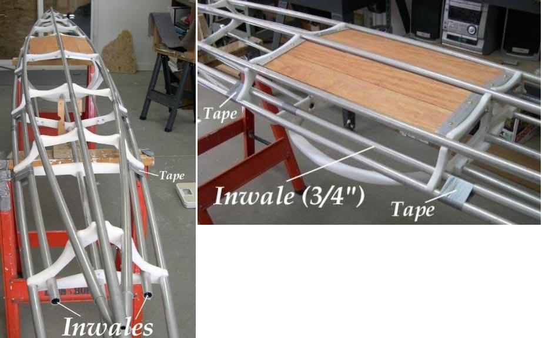

| Inwales ( Taped) | Menu Previous Page Next Page |
|
 Inwales - Inwales are used on shallow hulls to provide additional rigidity, both longitudinally and laterally. The inwales are not attached to the stem / stern like other stringers, but are cut just long enough to clear the ends of cross section 1 and 8 ( 1 and 6 on Sea Pup). After snapping the inwales onto the cross sections, tape, Velcro, HDPE clamps, or "Arched" Inwales are used to secure the Inwales at each cross section. The inwales are made in two equal length sections per side with 6" inserts connecting the tubes. Note - Though the inwales snap into place the same as other stringers, they are positioned opposite the others and could recoil out of place. Tape, Velcro, HDPE clamps, or "Arched" inwales ( preferred method) , insure that they don't. |
|